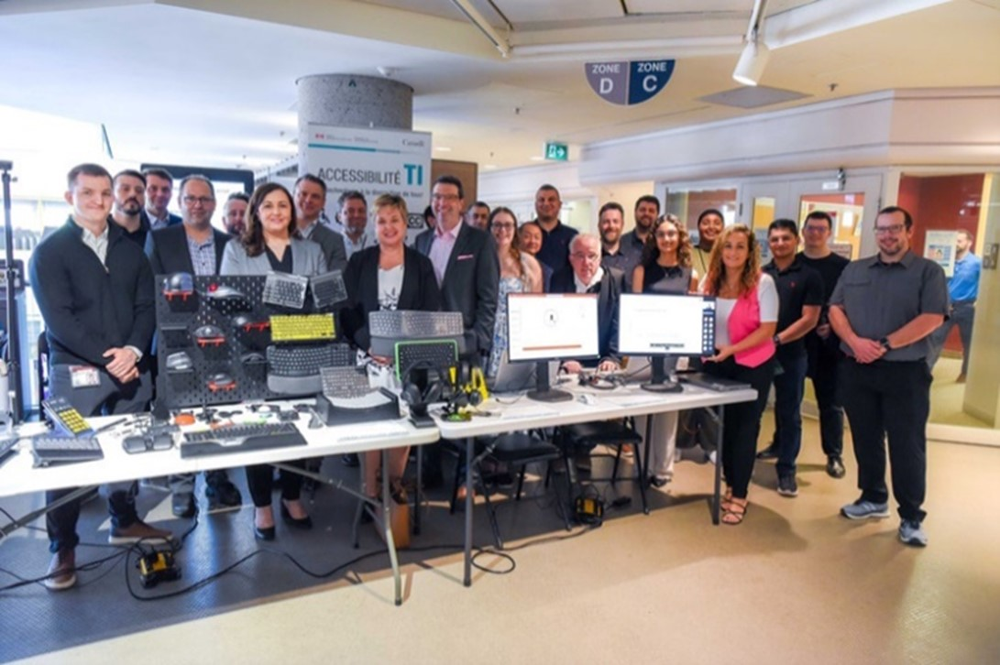

National AccessAbility Week at Innovation, Information and Technology Branch (IITB)
National Accessibility Week (NAAW) is a time to reflect on our shared journey toward a more accessible and inclusive Canada. It’s an opportunity for each of us to consider how we can drive change, inspire others, and promote inclusion in our daily work.
IITB NAAW Activities
In-Person Kiosk – May 27, 2025
The IT Accessibility Office (ITAO) and the Centre of Expertise for Optimizing Employee Potential (CoE OEP) partnered together to host an in-person kiosk, giving clients the chance to engage with them directly and to ask questions about end-to-end accessibility and the accommodation process.
The event was further elevated by the presence of senior leaders, including Chief Information Officer Rina Lorello (IITB), Assistant Deputy Minister (Human Resources Services Branch), and Director General André Baril (Accessibility and Disability Inclusion Projects). Their participation reaffirmed a strong commitment to advancing digital accessibility and inclusive service delivery.
The event was further elevated by the presence of senior leaders, including Chief Information Officer Rina Lorello (IITB), Assistant Deputy Minister (Human Resources Services Branch), and Director General André Baril (Accessibility and Disability Inclusion Projects). Their participation reaffirmed a strong commitment to advancing digital accessibility and inclusive service delivery.
This year, ITAO proudly launched a new initiative: the virtual kiosk. Designed to support all ESDC employees, the virtual kiosk offered a wide range of accessibility-related resources and services. It likewise addressed a number of topics, including:
- How to create accessible documents
- Blindness and low vision
- Mobility
- Cognitive disabilities
- Hearing loss
- The adaptive technology loan bank
- Accessible web tools
- How to use and test colour in digital content
Participant Feedback
“I attended the ITAO virtual kiosk and was immediately welcomed in both official languages. I joined the Accessible Documents session and received personalized support tailored to my questions. The team provided examples of all the changes and advancements that have been made, and I feel like I am more prepared to assist with the [Integrated Expertise Network] training team. I really learned a lot during the Accessible Documents info session and felt very supported with knowledge, links, and answers to my questions.”
— Tammy Beaulne, ESDC employee
ITAO Is Here to Help
Do you need more information regarding IT accessibility? If so, ITAO can help you find the answers and resources you need to make IT accessibility a part of what you do every day.
Contact Us
- Visit the ITAO iService page for more resources.
- Submit a service request through our intake form.
- Email us at EDSC.TI-IT.A11Y.ESDC@hrsdc-rhdcc.gc.ca.
-IT Accessibility Office